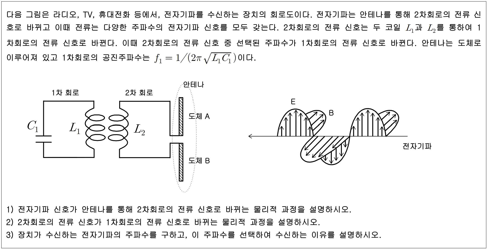

문제 6
다음 그림은 라디오, TV, 휴대전화 등에서, 전자기파를 수신하는 장치의 회로도이다. 전자기파는 안테나를 통해 2차회로의 전류 신호로 바뀌고 이때 전류는 다양한 주파수의 전자기파 신호를 모두 갖는다. 2차회로의 전류 신호는 두 코일 \(L_1\)과 \(L_2\)를 통하여 1차회로의 전류 신호로 바뀐다. 이때 2차회로의 전류 신호 중 선택된 주파수가 1차회로의 전류 신호로 바뀐다. 안테나는 도체로 이루어져 있고 1차회로의 공진주파수는 \(f_1 = 1/(2\pi\sqrt{L_1 C_1})\)이다.

(1) 전자기파 신호가 안테나를 통해 2차회로의 전류 신호로 바뀌는 물리적 과정을 설명하시오.
(2) 2차회로의 전류 신호가 1차회로의 전류 신호로 바뀌는 물리적 과정을 설명하시오.
(3) 장치가 수신하는 전자기파의 주파수를 구하고, 이 주파수를 선택하여 수신하는 이유를 설명하시오.